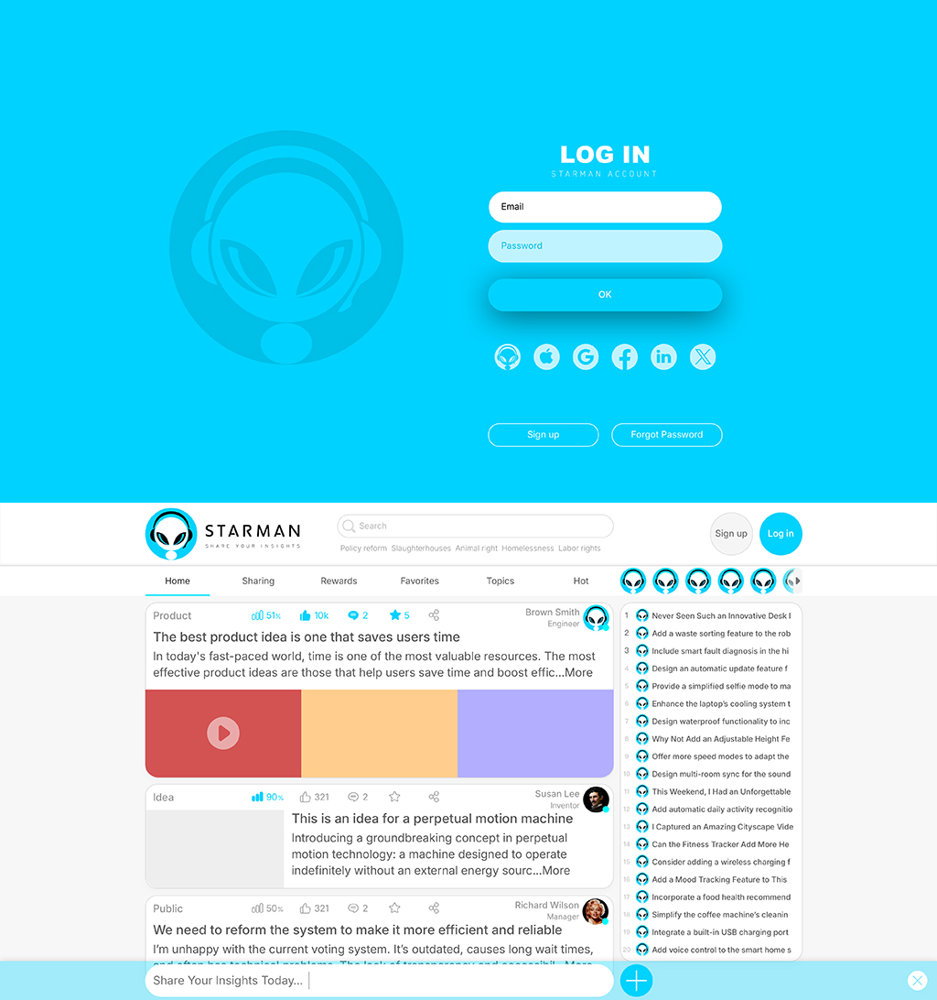

Social platforms were meant to unite minds, not monetize them.
The Insights Engine is not here to entertain—it exists to elevate.
In a world flooded by noise, this is a platform for signal. For substance. For solutions.
No ads. No manipulation. No celebrity bias.
Just people sharing real insights, offering real value, and building a more intelligent future together.
This is what social media should have been all along—and finally is.
| Aspect | The Insights Engine | Traditional Social Platforms |
|---|---|---|
| Content Type | High-value insights, proposals, constructive suggestions | Casual posts, selfies, personal updates, viral trends |
| User Role | Contributor of valuable ideas, thinkers, improvers | General social users, followers, entertainers |
| Monetization | No ads. Rewarded directly by those who benefit from suggestions. Platform earns small commission only. | Heavily ad-driven. Profit-focused through user data and promotional algorithms. | Exposure | Equal visibility based on insight quality. Every user has a fair chance to be seen and heard. | Highly algorithmic. Exposure often favors celebrities, influencers, and paid promotions. |
| Impact Focus | Improving products, services, and society through collective intelligence and meaningful feedback. | Engagement-driven. Focused on likes, shares, and attention metrics over constructive value. |
| Reward Mechanism | Users earn rewards from companies or communities for offering valuable improvement ideas. | Primarily social validation: likes, views, follows—rarely financial or actionable recognition. |
| Business Model | Public-benefit oriented. Operates without ads or user tracking, with minimal commissions on value exchanges. | Profit-maximization through advertising, data mining, and addictive content loops. |
| Advertisement Presence | No ads. Zero commercial distractions or algorithmic manipulation. | Ad-heavy. User feeds are filled with sponsored content and algorithmic targeting. |
Ten Unasked Questions — Examples for Your Inspiration
-
Why do outdated systems still survive, even when everyone knows they’re broken?
From tax filings to permit applications, forms repeat, queues stretch, time is bled.
Are these rituals protected by tradition, or tolerated by exhaustion? -
Why take ten steps to do what one could in one?
When simplicity is suppressed, someone profits from the complexity. -
Why must consumers pay for design flaws?
Labels that won’t peel. Tags that scratch. Tables that injure.
These aren’t accidents. They are symptoms of a numb civilization. -
Why is logging into a website harder than entering a room?
Is “security” there to protect users—or to farm them as training data for machines? -
Why do we need tools to open modern packaging?
When a box demands a blade, and plastic needs scissors—
is this indifference from brands, or humiliation for the buyer? -
Why wait at a red light with no cars in sight?
Were traffic systems meant to serve us, or to condition us?
Are smart roads too costly to replace an outdated excuse? -
Why do humans surrender their weekends to mowing lawns?
Is this ritual of trimming neat grass a symbol of order, or a worship of wasted labor? -
Why is education obsessed with test scores, not inspiration?
Creativity can’t be graded—so it’s treated as useless. -
Why must sirens scream across entire cities?
Has noise become the language of civilization?
Are screaming engines symbols of progress—or failures of empathy? -
Why do we treat the Earth like a thing, not a home?
People mine it, burn it, poison it—then call it “resources.”
If a home is where life begins, why did we choose to end it here?
